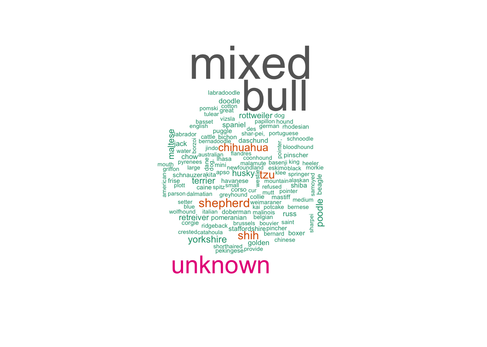
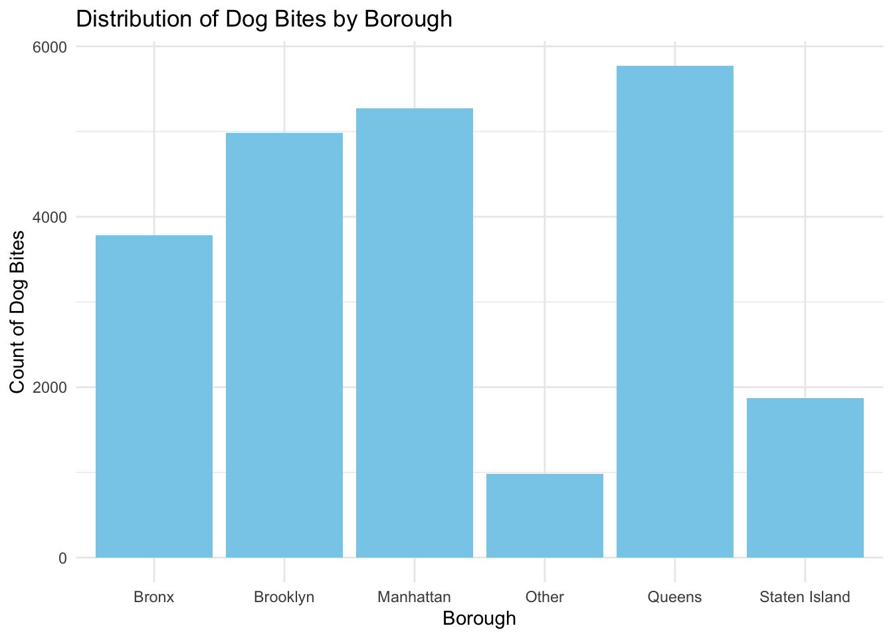

library(tidyverse)
library(knitr)
library(rvest)
library(broom)
library(dplyr)
library(purrr)
library(ggplot2)
library(plotly)
library(readxl)
library(reshape2)
library(akima)
library(wordcloud)
library(tm)# NYC zip code
url = "https://p8105.com/data/zip_codes.html"
ny_zip_codes = read_html(url) |>
html_table() |>
data.frame() |>
janitor::clean_names() |>
mutate(
borough = factor(
county,
levels=c("Bronx","Kings","New York", "Queens","Richmond"),
labels=c("Bronx","Brooklyn","Manhattan","Queens",
"Staten Island")))
valid_zipcodes = pull(ny_zip_codes, zip_code)
# Dog bite
dog_bites_df = read_csv("data/Dog_Bites_Data.csv", na = c("NA", "", ".")) |>
janitor::clean_names() |>
rename_with(~ gsub("^x", "", .))
dog_bites_clean = dog_bites_df |>
mutate(date_of_bite = as.Date(date_of_bite, format = "%B %d %Y")) |>
mutate(year = format(date_of_bite, "%Y"),
month = format(date_of_bite, "%m"),
day = format(date_of_bite, "%d")) |>
mutate(year = as.factor(as.numeric(year)),
month = factor(as.numeric(month), levels = 1:12),
day = as.factor(as.numeric(day))
) |>
mutate(breed = str_to_lower(breed)) |>
mutate(breed = ifelse(grepl("mix|mxied|cross|\\s[xX]|-X|/|&|COLLILE,|yorkie poo|yorkie chon|yorkie-poo|yorkipoo|boxer beagle|shi-po|Doberman And Labrador", breed, ignore.case = TRUE), "Mixed", breed)) |>
mutate(breed = ifelse(grepl("bull", breed, ignore.case = TRUE), "Bull", breed)) |>
mutate(breed = ifelse(grepl("know|KOW|unsure|not given|certain|not sure|unc", breed, ignore.case = TRUE), "Unknown", breed)) |>
mutate(breed = ifelse(grepl("poo", breed, ignore.case = TRUE), "Poodle", breed)) |>
mutate(breed = ifelse(grepl("vizsla", breed, ignore.case = TRUE), "Vizsla", breed)) |>
mutate(breed = ifelse(grepl("shepher|sheherd|shepard|sheep|shpherd|sheperd", breed, ignore.case = TRUE), "Shepherd", breed)) |>
mutate(breed = ifelse(grepl("husky", breed, ignore.case = TRUE), "Husky", breed)) |>
mutate(breed = ifelse(grepl("chihuahua|chi hua", breed, ignore.case = TRUE), "Chihuahua", breed)) |>
mutate(breed = ifelse(grepl("collie", breed, ignore.case = TRUE), "Collie", breed)) |>
mutate(breed = ifelse(grepl("cattle", breed, ignore.case = TRUE), "Cattle dog", breed)) |>
mutate(breed = ifelse(grepl("yorkie|yorkshire", breed, ignore.case = TRUE), "Yorkshire", breed)) |>
mutate(breed = ifelse(grepl("schnauzer", breed, ignore.case = TRUE), "Schnauzer", breed)) |>
mutate(breed = ifelse(grepl("coonhound", breed, ignore.case = TRUE), "Coonhound", breed)) |>
mutate(breed = ifelse(grepl("corgi", breed, ignore.case = TRUE), "Corgie", breed)) |>
mutate(breed = ifelse(grepl("dachshund", breed, ignore.case = TRUE), "Dachshund", breed)) |>
mutate(breed = ifelse(grepl("beagle", breed, ignore.case = TRUE), "Beagle", breed)) |>
mutate(breed = ifelse(grepl("west", breed, ignore.case = TRUE), "Westie", breed)) |>
mutate(breed = ifelse(grepl("mastiff", breed, ignore.case = TRUE), "Mastiff", breed)) |>
mutate(breed = ifelse(grepl("malti tzu|maltese", breed, ignore.case = TRUE), "Maltese", breed)) |>
mutate(breed = ifelse(grepl("shih tzu|Shichon|Shichi", breed, ignore.case = TRUE), "Shih tzu", breed)) |>
mutate(breed = ifelse(grepl("parson", breed, ignore.case = TRUE), "Parson", breed)) |>
mutate(breed = ifelse(grepl("nova", breed, ignore.case = TRUE), "Nova Scotia Duck Tolling Retriever", breed)) |>
mutate(breed = ifelse(grepl("Staffordshire", breed, ignore.case = TRUE), "Staffordshire", breed)) |>
mutate(breed = ifelse(grepl("skan mal", breed, ignore.case = TRUE), "alaskan malamute", breed)) |>
mutate(breed = ifelse(grepl("russell terr", breed, ignore.case = TRUE), "russell terrier", breed)) |>
mutate(breed = ifelse(grepl("shiba", breed, ignore.case = TRUE), "Shiba", breed)) |>
mutate(breed = ifelse(grepl("American Terrier", breed, ignore.case = TRUE), "American Terrier", breed)) |>
mutate(breed = ifelse(grepl("Golden", breed, ignore.case = TRUE), "Golden Doodle", breed)) |>
mutate(breed = ifelse(grepl("Springer", breed, ignore.case = TRUE), "Springer", breed)) |>
mutate(breed = ifelse(grepl("Catahoula", breed, ignore.case = TRUE), "Catahoula", breed)) |>
mutate(breed = ifelse(grepl("Crested", breed, ignore.case = TRUE), "Crested", breed)) |>
mutate(breed = ifelse(grepl("Spaniel", breed, ignore.case = TRUE), "Spaniel", breed)) |>
mutate(breed = ifelse(grepl("Dandie Dinmont", breed, ignore.case = TRUE), "Dandie Dinmont", breed)) |>
mutate(breed = ifelse(grepl("Pug", breed, ignore.case = TRUE), "Puggle", breed)) |>
mutate(breed = ifelse(grepl("Potcake", breed, ignore.case = TRUE), "Potcake", breed)) |>
mutate(breed = ifelse(grepl("Border Terrier", breed, ignore.case = TRUE), "Border Terrier", breed)) |>
mutate(breed = ifelse(grepl("Blue He", breed, ignore.case = TRUE), "Blue Heeler", breed)) |>
mutate(breed = ifelse(grepl("Bernedoodle", breed, ignore.case = TRUE), "Bernadoodle", breed)) |>
mutate(breed = ifelse(grepl("ne Corso", breed, ignore.case = TRUE), "Caine Corso", breed)) |>
mutate(breed = ifelse(grepl("ton De Tulear", breed, ignore.case = TRUE), "Cotton De Tulear", breed)) |>
mutate(breed = ifelse(grepl("Daschound|Daschund|Dachshund", breed, ignore.case = TRUE), "Daschund", breed)) |>
mutate(breed = ifelse(grepl("Pomsk", breed, ignore.case = TRUE), "Pomski", breed)) |>
mutate(breed = ifelse(grepl("Miniature Labradoodle", breed, ignore.case = TRUE), "Mini Labordoodle", breed)) |>
mutate(breed = ifelse(grepl("Miniature Pinscher", breed, ignore.case = TRUE), "Mini Pincher", breed)) |>
mutate(breed = ifelse(grepl("Wheaten Terrier|wheaton", breed, ignore.case = TRUE), "Wheaton Terrier", breed)) |>
mutate(breed = ifelse(grepl("Retriever", breed, ignore.case = TRUE), "Retreiver", breed)) |>
mutate(breed = ifelse(grepl("Dogue De Bord", breed, ignore.case = TRUE), "Dogue De Bordeaux", breed)) |>
mutate(breed = ifelse(grepl("Medium", breed, ignore.case = TRUE), "Medium", breed)) |>
mutate(breed = ifelse(grepl("small", breed, ignore.case = TRUE), "small", breed)) |>
mutate(breed = ifelse(grepl("Wolfhound", breed, ignore.case = TRUE), "Wolfhound", breed)) |>
mutate(breed = ifelse(grepl("Terrier", breed, ignore.case = TRUE), "Terrier", breed)) |>
mutate(breed = ifelse(grepl("small", breed, ignore.case = TRUE), "small", breed)) |>
mutate(breed = str_to_title(breed))
dog_licensing_df = read_csv("data/NYC_Dog_Licensing_Dataset.csv", na = c("NA", "", ".")) |>
janitor::clean_names() |>
rename_with(~ gsub("^x", "", .))This project used three datasets: NYC zip code data, NYC dog bite incidences data, and NYC dog licensing data. The NYC zip code dataset was obtained from the P8105 course website; the NYC dog bite incidences dataset was obtained from NYC Open Data; the NYC dog licensing dataset was obtained from the DOHMH Dog Licensing System.
In our exploratory data analysis below, we will examine how dog bite incidences are distributed by different variables in our data, including breed, gender, neuter status, borough, time, and license status.
top_breeds = dog_bites_clean |>
group_by(breed) |>
summarise(count = n()) |>
arrange(desc(count)) |>
filter(!is.na(breed) & breed != "unknown") |>
slice_head(n = 10)
top_breed_inter = plot_ly(
data = top_breeds,
labels = ~breed,
values = ~count,
type = 'pie',
textinfo = 'label+percent',
hoverinfo = 'label+value+percent',
marker = list(line = list(color = '#FFFFFF', width = 2))
) |>
layout(
title = "Top 10 Breeds Involved in Bite Count",
xaxis = list(showgrid = FALSE, zeroline = FALSE, showticklabels = FALSE),
yaxis = list(showgrid = FALSE, zeroline = FALSE, showticklabels = FALSE)
)
top_breed_interThe top 10 dog breeds that contributed to the most dog bite incidences are shown in the pie chart above. Pit bulls are involved in the most dog bite incidences, with a leading proportion of 45.3%, which is almost half of the incidences recorded in New York City. Shih Tzu is the second most frequent breed in these incidences (8.27%), followed by Chihuahua (7.31%) and other breeds.
In the pie chart, we notice that 5.88% of incidences were attributed to the American pit bull mix and 5.77% were attributed to the American pit bull terriers. Since the specific ancestry information for these dogs were not documented, it is unclear whether they are more related to the pit bull breed or the mixed breed. If they were to be classified as pit bulls, the pit bull category would make up an even bigger proportion of total dog bite incidences than it does now.
breeds <- dog_bites_clean |>
filter(breed != "unknown") |>
drop_na(breed) |>
pull(breed)
breeds <- tolower(breeds)
breed_text <- paste(breeds, collapse = " ")
breed_source <- VectorSource(breed_text)
breed_corpus <- Corpus(breed_source)
breed_tdm <- TermDocumentMatrix(breed_corpus)
breed_matrix <- as.matrix(breed_tdm)
breed_freq <- sort(rowSums(breed_matrix), decreasing = TRUE)set.seed(1234)
wordcloud(
names(breed_freq),
freq = breed_freq,
scale = c(4, 0.5),
max.words = 200,
colors = brewer.pal(8, "Dark2")
)
COMMENT
gender_spay_plot = ggplot(dog_bites_clean, aes(x = gender, fill = spay_neuter)) +
geom_bar(position = "dodge") +
theme_minimal() +
labs(title = "Dog Bites by Gender and Spay/Neuter Status",
x = "Gender",
y = "Count of Dog Bites",
fill = "Spay/Neuter Status") +
scale_fill_brewer(palette = "Set1") +
theme(plot.title = element_text(hjust = 0.5, size = 15))
# Display the static plot
gender_spay_plot_inter = ggplotly(gender_spay_plot)
gender_spay_plot_interAcross dog bite data with known genders, dog bite incidences appeared more than twice as frequent for male dogs compared to female dogs, for both neutered and un-neutered dogs. Comparing their neutered status, there is only a slight difference in dog bite incidences between the neutered and un-neutered groups. Neutered female dogs contributed to slightly more dog bite incidences than un-neitered female dogs, while un-neutered male dogs contributed to slightly more dog bite incidences.
It is worth noting that a significant portion of dog bite data had missing data for the dogs’ gender, and that among the unknown gender group, most dogs appeared to be neutered. The amount of missing information in these two variables could be leading us to an incomplete analysis of how dog bites were associated with gender and neuter status.
ggplot(dog_bites_clean, aes(x = borough)) +
geom_bar(fill = "skyblue") +
theme_minimal() +
labs(title = "Distribution of Dog Bites by Borough",
x = "Borough",
y = "Count of Dog Bites")
COMMENT
bites_by_year_month = dog_bites_clean |>
count(year, month, name = "Bite_Count") |>
mutate(hover_text = paste("Year:", year, "<br>Month:", month, "<br>Count:", Bite_Count))heatmap_interactive = plot_ly(
data = bites_by_year_month,
x = ~month,
y = ~year,
z = ~Bite_Count,
type = "heatmap",
colors = c("white", "red"),
text = ~hover_text,
hoverinfo = "text"
) |>
layout(
title = "Dog Bites by Month & Year",
xaxis = list(title = "Month"),
yaxis = list(title = "Year"),
colorbar = list(title = "Count for Dog Bites")
)
heatmap_interactiveCOmment
breed_counts <- dog_licensing_df |>
mutate(breed_name = tolower(breed_name)) |>
filter(!is.na(breed_name), breed_name != "unknown") |>
count(breed_name, name = "count") |>
arrange(desc(count))
set.seed(1234)
wordcloud(words = breed_counts$breed_name,
freq = breed_counts$count,
min.freq = 1,
max.words = 200,
random.order = FALSE,
rot.per = 0.35,
colors = brewer.pal(8, "Dark2"))COMMENT
ny_zip_codes_filtered = ny_zip_codes |>
select(zip_code, borough)
license_borough = dog_licensing_df |>
filter(zip_code %in% valid_zipcodes) |>
merge( ny_zip_codes_filtered, by = "zip_code", all.x = TRUE)
bites_by_borough = dog_bites_clean |>
group_by(borough) |>
summarise(Bite_Count = n())
licenses_by_borough = license_borough |>
group_by(borough) |>
summarise(License_Count = n())
borough_data = merge(bites_by_borough, licenses_by_borough, by = "borough", all = TRUE) |>
drop_na()
borough_data_long = borough_data |>
pivot_longer(cols = c("License_Count", "Bite_Count"),
names_to = "Count_Type",
values_to = "Count")borough_grouped_bar_plot = ggplot(borough_data_long, aes(x = borough, y = Count, fill = Count_Type)) +
geom_bar(stat = "identity", position = position_dodge(width = 0.7), width = 0.6) +
scale_fill_manual(name = "Count Type", values = c("License_Count" = "skyblue", "Bite_Count" = "orange"),
labels = c("License_Count" = "Licenses", "Bite_Count" = "Bites")) +
labs(title = "Dog Licenses and Bites by Borough", x = "Borough", y = "Count") +
theme_minimal() +
theme(plot.title = element_text(hjust = 0.5, size = 15))
borough_interactive = ggplotly(borough_grouped_bar_plot)
borough_interactiveCOMMENT
bite_borough_data = borough_data |>
mutate(Bite_Percentage = Bite_Count / sum(Bite_Count) * 100,
Bite_Label = paste0(borough, " (", round(Bite_Percentage, 1), "%)"))
bite_pie_interactive = plot_ly(
data = bite_borough_data,
labels = ~borough,
values = ~Bite_Count,
type = 'pie',
textinfo = 'label+percent',
hoverinfo = 'label+value+percent',
title = "Dog Bites by Borough",
domain = list(x = c(0, 0.3)),
marker = list(colors = RColorBrewer::brewer.pal(n = length(bite_borough_data$borough), name = "Set3"))
)
license_pie_data = borough_data |>
mutate(License_Percentage = License_Count / sum(License_Count) * 100,
License_Label = paste0(borough, " (", round(License_Percentage, 1), "%)"))
license_pie_interactive = plot_ly(
data = license_pie_data,
labels = ~borough,
values = ~License_Count,
type = 'pie',
textinfo = 'label+percent',
hoverinfo = 'label+value+percent',
title = "Dog Licenses by Borough",
domain = list(x = c(0.35, 0.65)),
marker = list(colors = RColorBrewer::brewer.pal(n = length(license_pie_data$borough), name = "Set3"))
)
rate_borough_data = borough_data |>
mutate(Bite_to_License_Ratio = Bite_Count / License_Count,
Ratio_Percentage = Bite_to_License_Ratio / sum(Bite_to_License_Ratio) * 100,
Ratio_Label = paste0(borough, " (", round(Ratio_Percentage, 1), "%)"))
ratio_pie_interactive = plot_ly(
data = rate_borough_data,
labels = ~borough,
values = ~Bite_to_License_Ratio,
type = 'pie',
textinfo = 'label+percent',
hoverinfo = 'label+value+percent',
title = "Ratio of Bites to Licenses by Borough",
domain = list(x = c(0.7, 1)),
marker = list(colors = RColorBrewer::brewer.pal(n = length(rate_borough_data$borough), name = "Set3"))
) combined_pies = subplot(
bite_pie_interactive,
license_pie_interactive,
ratio_pie_interactive,
nrows = 1
)
combined_piesCOMMENT